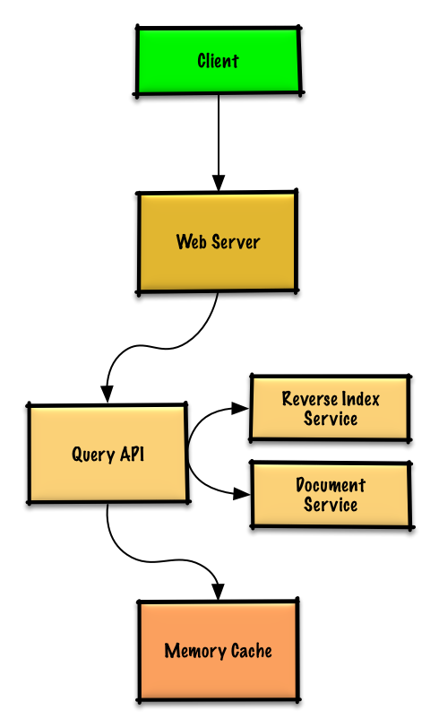

Design a key-value cache to save the results of the most recent web server queries¶
Note: This document links directly to relevant areas found in the system design topics to avoid duplication. Refer to the linked content for general talking points, tradeoffs, and alternatives.
Step 1: Investigate the problem, use cases and constraints and establish design scope¶
Gather main functional requirements and scope the problem. Ask questions to clarify use cases and constraints. Discuss assumptions.
Adding clarifying questions is the first step in the process. Remember your goal is to understand the problem and establish the design scope.
What questions should you ask to clarify the problem?¶
Here is an example of the dialog you could have with the Interviewer: Interviewer: Design a key-value cache to save the results of the most recent web server queries.
Candidate: ok, do you mean deploy Redis as docker or building Redis like?
Interviewer: I mean building Redis like.
Candidate: To clarify and understand the scope, may I start with a few quick questions?
Interviewer: Yes, please.
Candidate: What are the main features, users, and use cases of the system?
Interviewer: Yes, the cache should be able to handle 10 million users, 10 billion queries per month.
Candidate: ok. So here is the scope of the problem:
Use cases¶
We'll scope the problem to handle only the following use cases¶
- User sends a search request resulting in a cache hit
- User sends a search request resulting in a cache miss
- Service has high availability
Constraints and assumptions¶
State assumptions¶
- Traffic is not evenly distributed
- Popular queries should almost always be in the cache
- Need to determine how to expire/refresh
- Serving from cache requires fast lookups
- Low latency between machines
- Limited memory in cache
- Need to determine what to keep/remove
- Need to cache millions of queries
- 10 million users
- 10 billion queries per month
Calculate usage¶
Clarify with your interviewer if you should run back-of-the-envelope usage calculations.
- Cache stores ordered list of key: query, value: results
query- 50 bytestitle- 20 bytessnippet- 200 bytes- Total: 270 bytes
- 2.7 TB of cache data per month if all 10 billion queries are unique and all are stored
- 270 bytes per search * 10 billion searches per month
- Assumptions state limited memory, need to determine how to expire contents
- 4,000 requests per second
Handy conversion guide:
- 2.5 million seconds per month
- 1 request per second = 2.5 million requests per month
- 40 requests per second = 100 million requests per month
- 400 requests per second = 1 billion requests per month
Step 2: Create a high level design & Get buy-in¶
Outline a high level design with all important components.

%%{init: { "flowchart": { "htmlLabels": true } }}%%
flowchart TB
%% Client Layer
subgraph Client["**Client**"]
direction TB
WebClient[Web Client]
MobileClient[Mobile Client]
end
%% Web Server Layer
subgraph WebServer["**Web Server - (Reverse Proxy)**"]
direction LR
QueryAPI[Query API]
ReverseIndexService[Reverse Index Service]
DocumentService[Document Service]
end
%% Storage Layer
subgraph MemoryCache["**Memory Cache**"]
end
%% Data Flow
Client --> WebServer
QueryAPI --> ReverseIndexService
QueryAPI --> DocumentService
QueryAPI --> MemoryCache
%% Styling Nodes
style WebClient fill:#FFCCCC,stroke:#CC0000,stroke-width:2px,rx:6,ry:6
style MobileClient fill:#FFD580,stroke:#AA6600,stroke-width:2px,rx:6,ry:6
style ReverseIndexService fill:#CCE5FF,stroke:#004085,stroke-width:2px,rx:6,ry:6
style QueryAPI fill:#CCE5FF,stroke:#004085,stroke-width:2px,rx:6,ry:6
style DocumentService fill:#D4EDDA,stroke:#155724,stroke-width:2px,rx:6,ry:6
style MemoryCache fill:#E2E3E5,stroke:#6C757D,stroke-width:2px,rx:6,ry:6Get buy-in¶
✅ Why This Breakdown?
Rather than diving into implementation, this diagram tells a story:
It reflects the search query workflow with separation of concerns:
- The Query API handles parsing and orchestration of the search process
- The Reverse Index Service focuses on finding matching documents efficiently when there is a cache miss
- The Document Service retrieves and formats the actual content
- The Memory Cache the memory cache which is used to serve cache hits
A Reverse/Inverted Index is a data structure used in search engines that maps content (like words or terms) to their locations in a set of documents. It's called "reverse" because instead of mapping documents to their contents, it maps contents to their documents - hence inverting the relationship. Let me break this down with an example: Suppose we have two documents: 1. "The quick brown fox" 2. "The lazy brown dog" A reverse index would look something like this: * "The" -> [doc1, doc2] * "quick" -> [doc1] * "brown" -> [doc1, doc2] * "fox" -> [doc1] * "lazy" -> [doc2] * "dog" -> [doc2]
After finding matching documents, the Document Service is then used to fetch the actual content. Workflow: Query API -> Memory Cache -> Cache Miss -> Reverse Index Service: 1. Receives processed query from Query API 2. Uses inverted index to find matching documents 3. Ranks the results 4. Returns top matches to Query API
Query API -> Memory Cache -> Cache Hit: 1. refresh the cache with the new hit 2. Returns top matches to Query API
Since the cache has limited capacity, we'll use a least recently used (LRU) approach to expire older entries. Recency: Every time you read or write a key, you mark it as the “most recently used.”
Eviction: When inserting a new entry into a full cache, you remove the entry marked as the “least recently used” (i.e. the one you haven’t touched in the longest time).
The architecture supports both the "cache hit" and "cache miss" scenarios while maintaining clear boundaries between components.
You should ask for a feedback after you present the diagram, and get buy-in and some initial ideas about areas to dive into, based on the feedback.
Step 3: Design core components¶
Dive into details for each core component.
Use case: User sends a request resulting in a cache hit¶
Popular queries can be served from a Memory Cache such as Redis or Memcached to reduce read latency and to avoid overloading the Reverse Index Service and Document Service. Reading 1 MB sequentially from memory takes about 250 microseconds, while reading from SSD takes 4x and from disk takes 80x longer.1
- The Client sends a request to the Web Server, running as a reverse proxy
- The Web Server forwards the request to the Query API server
- The Query API server does the following:
- Parses the query
- Removes markup
- Breaks up the text into terms
- Fixes typos
- Normalizes capitalization
- Converts the query to use boolean operations
- Checks the Memory Cache for the content matching the query
- If there's a hit in the Memory Cache, the Memory Cache does the following:
- Updates the cached entry's position to the front of the LRU list
- Returns the cached contents
- Else, the Query API does the following:
- Uses the Reverse Index Service to find documents matching the query
- The Reverse Index Service ranks the matching results and returns the top ones
- Uses the Document Service to return titles and snippets
- Updates the Memory Cache with the contents, placing the entry at the front of the LRU list
- Uses the Reverse Index Service to find documents matching the query
- If there's a hit in the Memory Cache, the Memory Cache does the following:
- Parses the query
Cache implementation¶
To achieve constant time O(1) for both get and put, combine two structures:
-
Hash map (Map
-
Doubly‐linked list: nodes ordered by recency, head = most recent, tail = least recent. O(1) for
appendandremove
Clarify with your interviewer the expected amount, style, and purpose of the code you should write.
Query API Server implementation:
class QueryApi(object):
def __init__(self, memory_cache, reverse_index_service):
self.memory_cache = memory_cache
self.reverse_index_service = reverse_index_service
def parse_query(self, query):
"""Remove markup, break text into terms, deal with typos,
normalize capitalization, convert to use boolean operations.
"""
...
def process_query(self, query):
query = self.parse_query(query)
results = self.memory_cache.get(query)
if results is None:
results = self.reverse_index_service.process_search(query)
self.memory_cache.set(query, results)
return results
Node implementation:
class Node(object):
def __init__(self, query, results):
self.query = query # the cache key
self.results = results # the cached payload
self.prev = None # link to previous node
self.next = None # link to next node
LinkedList implementation:
class LinkedList(object):
def __init__(self):
self.head = None
self.tail = None
def move_to_front(self, node):
"""Detach `node` wherever it is, then insert it at head."""
# 1) If node is already head, nothing to do.
# 2) Otherwise unlink it:
# node.prev.next = node.next
# node.next.prev = node.prev
# 3) Re-link at front:
# node.next = self.head
# self.head.prev = node
# self.head = node
# node.prev = None
def append_to_front(self, node):
"""Insert a brand-new node at head."""
# 1) node.next = self.head
# 2) if head exists: head.prev = node
# 3) self.head = node
# 4) if tail is None (first element): tail = node
def remove_from_tail(self):
"""Unlink the tail node and return it (the oldest entry)."""
# 1) old = self.tail
# 2) self.tail = old.prev
# 3) if new tail: new_tail.next = None
# else (list empty): head = None
# 4) return old
Cache implementation:
class Cache(object):
def __init__(self, MAX_SIZE):
self.MAX_SIZE = MAX_SIZE
self.size = 0
self.lookup = {} # key: query, value: node
self.linked_list = LinkedList()
def get(self, query)
"""Get the stored query result from the cache.
Accessing a node updates its position to the front of the LRU list.
"""
node = self.lookup[query]
if node is None:
return None
self.linked_list.move_to_front(node)
return node.results
def set(self, results, query):
"""Set the result for the given query key in the cache.
When updating an entry, updates its position to the front of the LRU list.
If the entry is new and the cache is at capacity, removes the oldest entry
before the new entry is added.
"""
node = self.lookup[query]
if node is not None:
# Key exists in cache, update the value
node.results = results
self.linked_list.move_to_front(node)
else:
# Key does not exist in cache
if self.size == self.MAX_SIZE:
# Remove the oldest entry from the linked list and lookup
self.lookup.pop(self.linked_list.tail.query, None)
self.linked_list.remove_from_tail()
else:
self.size += 1
# Add the new key and value
new_node = Node(query, results)
self.linked_list.append_to_front(new_node)
self.lookup[query] = new_node
Why this is O(1)
* Lookup: self.lookup[query] is a hash-table lookup → O(1).
* Reordering: Doubly-linked list insertions/removals (given a reference to the node) are pointer updates → O(1).
* Eviction: Removing tail is O(1), and deleting from the dict is O(1).
When to update the cache¶
The cache should be updated when:
- The page contents change
- The page is removed or a new page is added
- The page rank changes
The most straightforward way to handle these cases is to simply set a max time that a cached entry can stay in the cache before it is updated, usually referred to as time to live (TTL).
Refer to When to update the cache for tradeoffs and alternatives. The approach above describes cache-aside.
Scale the design¶
Identify and address bottlenecks, given the constraints.

Important: Do not simply jump right into the final design from the initial design!
State you would 1) Benchmark/Load Test, 2) Profile for bottlenecks 3) address bottlenecks while evaluating alternatives and trade-offs, and 4) repeat. See Design a system that scales to millions of users on AWS as a sample on how to iteratively scale the initial design.
It's important to discuss what bottlenecks you might encounter with the initial design and how you might address each of them. For example, what issues are addressed by adding a Load Balancer with multiple Web Servers? CDN? Master-Slave Replicas? What are the alternatives and Trade-Offs for each?
Step 4 Wrap up¶
To summarize, we've designed a key-value cache to save the results of the most recent web server queries. We've discussed the high-level design, identified potential bottlenecks, and proposed solutions to address scalability issues. Now it is time to align again with the interviewer expectations. See if she has any feedback or questions, suggest next steps, improvements, error handling, and monitoring if appropriate.
We'll introduce some components to complete the design and to address scalability issues. Internal load balancers are not shown to reduce clutter.
To avoid repeating discussions, refer to the following system design topics for main talking points, tradeoffs, and alternatives:
- DNS
- Load balancer
- Horizontal scaling
- Web server (reverse proxy)
- API server (application layer)
- Cache
- Consistency patterns
- Availability patterns
Expanding the Memory Cache to many machines¶
To handle the heavy request load and the large amount of memory needed, we'll scale horizontally. We have three main options on how to store the data on our Memory Cache cluster:
- Each machine in the cache cluster has its own cache - Simple, although it will likely result in a low cache hit rate.
- Each machine in the cache cluster has a copy of the cache - Simple, although it is an inefficient use of memory.
- The cache is sharded across all machines in the cache cluster - More complex, although it is likely the best option. We could use hashing to determine which machine could have the cached results of a query using
machine = hash(query). We'll likely want to use consistent hashing.
Additional talking points¶
Additional topics to dive into, depending on the problem scope and time remaining.
SQL scaling patterns¶
NoSQL¶
Caching¶
- Where to cache
- What to cache
- When to update the cache
Asynchronism and microservices¶
Communications¶
- Discuss tradeoffs:
- External communication with clients - HTTP APIs following REST
- Internal communications - RPC
- Service discovery
Security¶
Refer to the security section.
Latency numbers¶
See Latency numbers every programmer should know.
Ongoing¶
- Continue benchmarking and monitoring your system to address bottlenecks as they come up
- Scaling is an iterative process